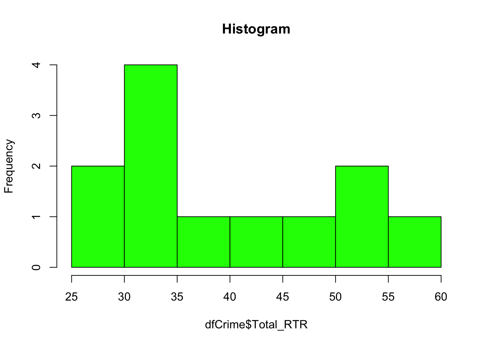
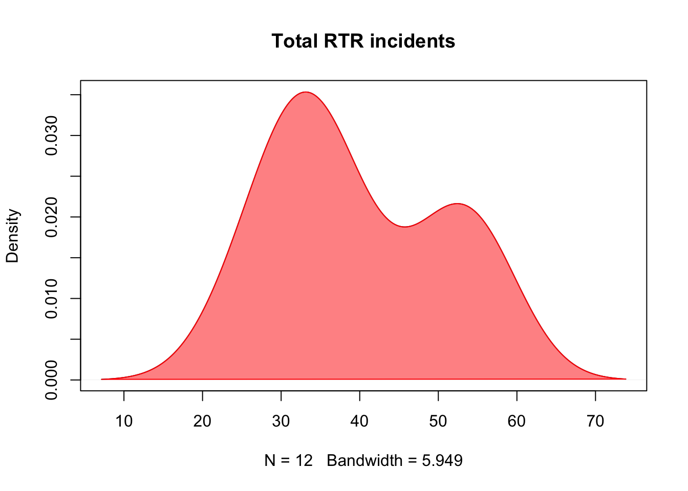
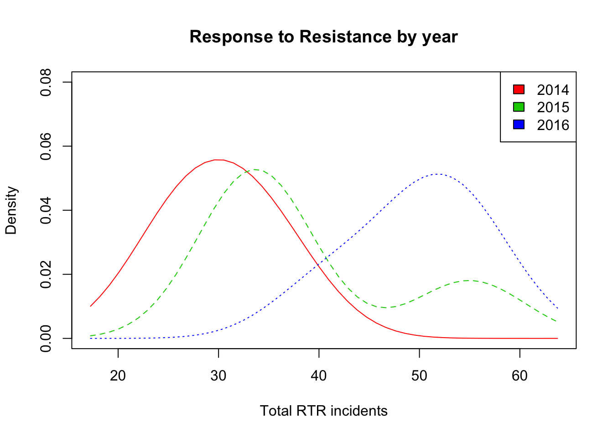

“Interviewing your data” is a concept introduced through Investigative Reporters and Editors, an organization I highly recommend you look into.
It means you’re using code to ask questions about the nature of the data. The data set we’ll mostly be using isn’t very large so this step isn’t going to be very challenging.
But it will be the longest of these guides.
We’ll be working with three years of data from the Elgin police department, each year having four quarters, so a total of 12 rows of information. The data itself looks at their use of physical force in response to resistance, use of stun guns and use of handguns. It includes stats on officer and suspect injuries, and overall numbers on arrests.
Let’s take a moment to point out that - for a reporter - none of this is a replacement for talking with people. Any dataset should simply be one source of information out of many that you use for a story.
And you need to be thinking critically about the data like any source. For instance, there’s no geographical data associated in the data. That means we can’t map any of this. It doesn’t necessarily mean someone’s trying to hide anything, but not having something that potentially describes the data in a certain way is like making an entire topic off limits at a press conference.
The first step is to bring your data into R and to do that we’ll need to load in a library.
library(readr)In this case the readr package is a bit like using a jackhammer to drive a nail, but it’s a good package to know about.
Now read in the data using read_csv, storing it in a dataframe called “elgCrime”
elgCrime <- read_csv("ElginUOF.csv")## Parsed with column specification:
## cols(
## .default = col_integer(),
## Year_Quarter = col_character()
## )## See spec(...) for full column specifications.Very quickly, here’s a number of ways you can examine the nature of the dataset
ls() # lists all the datasets loaded in your R studio## [1] "elgCrime"class(elgCrime) # Tells us the data is in a dataframe## [1] "tbl_df" "tbl" "data.frame"dim(elgCrime) # finds number of rows and columns## [1] 12 23nrow(elgCrime) # finds number of rows## [1] 12ncol(elgCrime) # finds number of columns## [1] 23object.size(elgCrime) # size of the data set in memory used## 15760 bytesAll these are useful at the start - if you’re expecting information about the 108 counties in Illinois but your dataset only has 103 rows, there’s something wrong.
A quick techinical note about object.size: Many programs will use the harddrive to supplement the memory of your computer. R doesn’t do that. So if you’re working with a big file but only have 2 gigs of memory, things might run slow - or not at all. So object.size is a good way to test if a file is going to be problematic.
There’s a few ways to look at the data itself. The first is in R studio, where under the Environment tab you can click on “elgCrime” and see a sortable table much like Excel (expect you can’t select and edit).
When the data is too big, you would use these commands
names(elgCrime) # returns vector of column names## [1] "Year_Quarter" "Total_CFS" "Total_arrests"
## [4] "Total_RTR_incidents" "SOF_only" "UOF_only"
## [7] "Total_transitions" "Handgun_drawn_NP" "Handgun_pointed"
## [10] "Handgun_discharged" "Total_handgun" "Traser_drawn_NP"
## [13] "Taser_pointed" "Taser_fired" "Total_taser"
## [16] "Officer_noInjuries" "Officer_minor" "Officer_mayor"
## [19] "Total_officer" "Suspect_noInjuries" "Suspect_minor"
## [22] "Suspect_major" "Total_suspect"head(elgCrime) # looks at first six columns (with column names)## # A tibble: 6 x 23
## Year_Quarter Total_CFS Total_arrests Total_RTR_incidents SOF_only
## <chr> <int> <int> <int> <int>
## 1 2014 1Q 19217 989 32 12
## 2 2014 2Q 21265 1178 25 7
## 3 2014 3Q 21994 1246 36 11
## 4 2014 4Q 18182 1047 28 6
## 5 2015 1Q 18178 1014 34 10
## 6 2015 2Q 19812 929 32 9
## # ... with 18 more variables: UOF_only <int>, Total_transitions <int>,
## # Handgun_drawn_NP <int>, Handgun_pointed <int>,
## # Handgun_discharged <int>, Total_handgun <int>, Traser_drawn_NP <int>,
## # Taser_pointed <int>, Taser_fired <int>, Total_taser <int>,
## # Officer_noInjuries <int>, Officer_minor <int>, Officer_mayor <int>,
## # Total_officer <int>, Suspect_noInjuries <int>, Suspect_minor <int>,
## # Suspect_major <int>, Total_suspect <int>tail(elgCrime) # looks at the last six columns (with column names)## # A tibble: 6 x 23
## Year_Quarter Total_CFS Total_arrests Total_RTR_incidents SOF_only
## <chr> <int> <int> <int> <int>
## 1 2015 3Q 22530 1000 35 12
## 2 2015 4Q 20276 889 55 19
## 3 2016 1Q 23423 1046 50 12
## 4 2016 2Q 24715 962 52 13
## 5 2016 3Q 24680 954 56 14
## 6 2016 4Q 21822 905 41 15
## # ... with 18 more variables: UOF_only <int>, Total_transitions <int>,
## # Handgun_drawn_NP <int>, Handgun_pointed <int>,
## # Handgun_discharged <int>, Total_handgun <int>, Traser_drawn_NP <int>,
## # Taser_pointed <int>, Taser_fired <int>, Total_taser <int>,
## # Officer_noInjuries <int>, Officer_minor <int>, Officer_mayor <int>,
## # Total_officer <int>, Suspect_noInjuries <int>, Suspect_minor <int>,
## # Suspect_major <int>, Total_suspect <int>With head and tail, you can also specify the number of rows you want to see
head(elgCrime, 10) # looks at first 10 rows## # A tibble: 10 x 23
## Year_Quarter Total_CFS Total_arrests Total_RTR_incidents SOF_only
## <chr> <int> <int> <int> <int>
## 1 2014 1Q 19217 989 32 12
## 2 2014 2Q 21265 1178 25 7
## 3 2014 3Q 21994 1246 36 11
## 4 2014 4Q 18182 1047 28 6
## 5 2015 1Q 18178 1014 34 10
## 6 2015 2Q 19812 929 32 9
## 7 2015 3Q 22530 1000 35 12
## 8 2015 4Q 20276 889 55 19
## 9 2016 1Q 23423 1046 50 12
## 10 2016 2Q 24715 962 52 13
## # ... with 18 more variables: UOF_only <int>, Total_transitions <int>,
## # Handgun_drawn_NP <int>, Handgun_pointed <int>,
## # Handgun_discharged <int>, Total_handgun <int>, Traser_drawn_NP <int>,
## # Taser_pointed <int>, Taser_fired <int>, Total_taser <int>,
## # Officer_noInjuries <int>, Officer_minor <int>, Officer_mayor <int>,
## # Total_officer <int>, Suspect_noInjuries <int>, Suspect_minor <int>,
## # Suspect_major <int>, Total_suspect <int>tail(elgCrime, 5) # looks at athe last 5 rows## # A tibble: 5 x 23
## Year_Quarter Total_CFS Total_arrests Total_RTR_incidents SOF_only
## <chr> <int> <int> <int> <int>
## 1 2015 4Q 20276 889 55 19
## 2 2016 1Q 23423 1046 50 12
## 3 2016 2Q 24715 962 52 13
## 4 2016 3Q 24680 954 56 14
## 5 2016 4Q 21822 905 41 15
## # ... with 18 more variables: UOF_only <int>, Total_transitions <int>,
## # Handgun_drawn_NP <int>, Handgun_pointed <int>,
## # Handgun_discharged <int>, Total_handgun <int>, Traser_drawn_NP <int>,
## # Taser_pointed <int>, Taser_fired <int>, Total_taser <int>,
## # Officer_noInjuries <int>, Officer_minor <int>, Officer_mayor <int>,
## # Total_officer <int>, Suspect_noInjuries <int>, Suspect_minor <int>,
## # Suspect_major <int>, Total_suspect <int>The program that generates these guide files doesn’t show all the columns, but you’ll see them all in your R Studio console window.
There are other commands but here’s a great way to look at the data
summary(elgCrime)## Year_Quarter Total_CFS Total_arrests Total_RTR_incidents
## Length:12 Min. :18178 Min. : 889.0 Min. :25.00
## Class :character 1st Qu.:19663 1st Qu.: 947.8 1st Qu.:32.00
## Mode :character Median :21544 Median : 994.5 Median :35.50
## Mean :21341 Mean :1013.2 Mean :39.67
## 3rd Qu.:22753 3rd Qu.:1046.2 3rd Qu.:50.50
## Max. :24715 Max. :1246.0 Max. :56.00
## SOF_only UOF_only Total_transitions Handgun_drawn_NP
## Min. : 6.00 Min. :15.00 Min. : 2.000 Min. :0.000
## 1st Qu.: 9.75 1st Qu.:16.00 1st Qu.: 3.000 1st Qu.:1.000
## Median :12.00 Median :19.50 Median : 6.500 Median :3.000
## Mean :11.67 Mean :21.92 Mean : 6.083 Mean :3.417
## 3rd Qu.:13.25 3rd Qu.:25.75 3rd Qu.: 8.000 3rd Qu.:5.250
## Max. :19.00 Max. :35.00 Max. :12.000 Max. :8.000
## Handgun_pointed Handgun_discharged Total_handgun Traser_drawn_NP
## Min. : 2.000 Min. :0 Min. : 4.00 Min. :0.000
## 1st Qu.: 3.750 1st Qu.:0 1st Qu.: 7.00 1st Qu.:1.000
## Median : 6.500 Median :0 Median : 9.50 Median :2.000
## Mean : 6.667 Mean :0 Mean :10.08 Mean :2.083
## 3rd Qu.: 9.250 3rd Qu.:0 3rd Qu.:13.50 3rd Qu.:3.000
## Max. :12.000 Max. :0 Max. :18.00 Max. :6.000
## Taser_pointed Taser_fired Total_taser Officer_noInjuries
## Min. : 2.000 Min. :1.000 Min. : 5.00 Min. :19.00
## 1st Qu.: 3.750 1st Qu.:2.750 1st Qu.: 8.00 1st Qu.:26.50
## Median : 6.000 Median :4.500 Median :13.00 Median :32.00
## Mean : 7.083 Mean :4.667 Mean :13.83 Mean :34.08
## 3rd Qu.: 9.250 3rd Qu.:6.500 3rd Qu.:19.50 3rd Qu.:43.75
## Max. :16.000 Max. :9.000 Max. :27.00 Max. :51.00
## Officer_minor Officer_mayor Total_officer Suspect_noInjuries
## Min. :1.00 Min. :0.0000 Min. :1.000 Min. :18.00
## 1st Qu.:3.75 1st Qu.:0.0000 1st Qu.:4.000 1st Qu.:25.00
## Median :5.50 Median :0.0000 Median :6.000 Median :28.50
## Mean :5.25 Mean :0.3333 Mean :5.583 Mean :32.42
## 3rd Qu.:7.00 3rd Qu.:1.0000 3rd Qu.:7.000 3rd Qu.:42.00
## Max. :8.00 Max. :1.0000 Max. :9.000 Max. :47.00
## Suspect_minor Suspect_major Total_suspect
## Min. : 3.000 Min. :0.0000 Min. : 3.00
## 1st Qu.: 4.750 1st Qu.:0.0000 1st Qu.: 4.75
## Median : 7.500 Median :0.0000 Median : 7.50
## Mean : 7.083 Mean :0.1667 Mean : 7.25
## 3rd Qu.: 8.000 3rd Qu.:0.0000 3rd Qu.: 8.25
## Max. :14.000 Max. :1.0000 Max. :14.00Summary is dead useful. For each column (where possible), it automatically gives you the minimum number, the number at the first quartile (25% point), the median and mean, the number at the third quartile (75%) and finally the maximum number.
For instance, right away we see that Elgin police haven’t fired their guns in the three years the data covers.
The only drawback is it’s hard to view in the console if you have a lot of columns. There’s a simple way of storing the result of summary into a dataframe viewable by clicking on it in the Environment tab.
sumElg <- do.call(cbind, lapply(elgCrime, summary))This is one of those “just turn the door knob” moments. You only need to put the name of your dataframe in … lapply(NAME, summary)) … and assign it to a dataframe … sumElg <- …
Now you can view it whenever you want in an easily scrollable format by clicking on it in the Environment tab.
Now that we have a better understanding of everything, let’s grab a slice of the dataset to look at more closely. Let’s focus just on the Response to Resistance data, which includes total RTR incidents or incidents that involved police showing or using physical techniques to respond instead of a weapon like a taser or gun. These are broken down into three parts: Show of force only, Use of force only and then incidents that transitioned from Show to Use of force (total transitions).
But first, I don’t like that we have the year and the quarter in the same column. I’d like to also have a column with just the year and one with just the quarter. Here’s how we do that:
Let’s sort the dataframe in ascending order by year/quarter
elgCrime[order(elgCrime$Year_Quarter),]## # A tibble: 12 x 23
## Year_Quarter Total_CFS Total_arrests Total_RTR_incidents SOF_only
## <chr> <int> <int> <int> <int>
## 1 2014 1Q 19217 989 32 12
## 2 2014 2Q 21265 1178 25 7
## 3 2014 3Q 21994 1246 36 11
## 4 2014 4Q 18182 1047 28 6
## 5 2015 1Q 18178 1014 34 10
## 6 2015 2Q 19812 929 32 9
## 7 2015 3Q 22530 1000 35 12
## 8 2015 4Q 20276 889 55 19
## 9 2016 1Q 23423 1046 50 12
## 10 2016 2Q 24715 962 52 13
## 11 2016 3Q 24680 954 56 14
## 12 2016 4Q 21822 905 41 15
## # ... with 18 more variables: UOF_only <int>, Total_transitions <int>,
## # Handgun_drawn_NP <int>, Handgun_pointed <int>,
## # Handgun_discharged <int>, Total_handgun <int>, Traser_drawn_NP <int>,
## # Taser_pointed <int>, Taser_fired <int>, Total_taser <int>,
## # Officer_noInjuries <int>, Officer_minor <int>, Officer_mayor <int>,
## # Total_officer <int>, Suspect_noInjuries <int>, Suspect_minor <int>,
## # Suspect_major <int>, Total_suspect <int>Alternatively, here’s how you would sort decending order elgCrime[order(elgCrime$Year_Quarter, decreasing=TRUE),]
Next we’re going to grab the first four letters in the year/quarter column and put them in a column called year using the command “substr.”
elgCrime$year <- as.numeric(as.character( substr(elgCrime$Year_Quarter, start=1, stop=4) ))The command “as.numeric(as.character( …” that wraps around the substr commmand takes those four letters and tells R that we want them considered a number, not a string.
We don’t have to do that with quarter since it has a mix of letters and numbers (Q1, Q2 etc)
elgCrime$quarter <- substr(elgCrime$Year_Quarter, start=6, stop=7)If you look at elgCrime now, you’ll see two new columns at the end summary(elgCrime)
Now let’s grab just the columns we want:
dfCrime <- elgCrime[,c("Year_Quarter","year","quarter","Total_CFS","Total_arrests","Total_RTR_incidents","SOF_only","UOF_only","Total_transitions")]We take a list of the columns we want in elgCrime and put them into a dataframe called dfCrime.
Some of the column names are long, and we’ll be working with them so let’s shorten them
names(dfCrime)[names(dfCrime)=="Total_RTR_incidents"] <- "Total_RTR"
names(dfCrime)[names(dfCrime)=="Total_transitions"] <- "Transitions"Let’s save it as a csv file as we’ll be using it extensively.
write_csv(dfCrime,"dfCrime.csv")We just did a lot. Take a moment and click on dfCrime and elgCrime in the Environnment tab. Compare the two and it should help you understand how we got here.
hist(dfCrime$Total_RTR, breaks=10, main="Histogram", col="green")
A histogram may look like a bar chart, but it’s different. A bar chart will show the number of things in a category, like the number of incidents in the first quarter of 2014 versus the number in the second. And we’ll make a bar chart like that in another file.
A histogram shows how often (frequency) a value appears. In this case, we know we have 12 numbers or values in the Total_RTR column. We also know, from using summary(), that the minimum number out of that 12 is “25” and the maximum is “56.”
So a histogram counts the number of times a value shows up between 25 and 56. For instance, we can see there four values between 30 and 35 in our dataset.
Not a big deal with such a small dataset. Very useful when you’re working with a large dataset like campaign contributions.
Play around with the number of breaks - it’s not always going to change. Histogram automatically rounds the number of breaks to the next best number. 2 will work, 3 gets you four bars, 5 gets you seven bars and so on.
A density plot is another kind of histogram, except it has a smooth line.
First we get the density and put in a variable ‘d.’ (you can call it anything you want)
d <- density(dfCrime$Total_RTR)
d##
## Call:
## density.default(x = dfCrime$Total_RTR)
##
## Data: dfCrime$Total_RTR (12 obs.); Bandwidth 'bw' = 5.949
##
## x y
## Min. : 7.152 Min. :7.723e-05
## 1st Qu.:23.826 1st Qu.:2.864e-03
## Median :40.500 Median :1.729e-02
## Mean :40.500 Mean :1.497e-02
## 3rd Qu.:57.174 3rd Qu.:2.164e-02
## Max. :73.848 Max. :3.533e-02You can see the distribution between Min and Max is different than the one in Summary(). That’s because density is trying to use the data to generate a smooth line.
Generally, bandwidth shows how much there is at that point. Feel free to google “R density plots bandwidth” to learn more.
Now let’s use d to plot
plot(d, main="Total RTR incidents")
polygon(d, col=rgb(1, 0, 0, 0.5), border="red") 
plot takes the information in d and generates the density chart. main adds a title.
polygon formats the plot, making the line red and filling it with red: col=rgb(red,green,blue…
The last number is the alpha or opacity of the polygon. The value could be from 0 (0% or transparent) to 1 (100%). This is at 0.5, so it’s 50%.
As to the result, you can see it mirrors the histogram.
That’s all good, but in our data there’s a factor that we can use to group and compare portions of our data: year.
BTW: remember that word factor. It’s something that will come up a lot when making graphics and maps in R.
We need to load in the library called “sm.” You may need to install it first.
library(sm)## Package 'sm', version 2.2-5.4: type help(sm) for summary informationNow let’s see how many years we have. We know there’s only three in this set.
listF <- as.factor(dfCrime$year)
listF## [1] 2014 2014 2014 2014 2015 2015 2015 2015 2016 2016 2016 2016
## Levels: 2014 2015 2016as.factor gives us all the groups it finds. We put that in the variable listF in case we want refer to it later.
Let’s generate the plot and then go through the code:
sm.density.compare(dfCrime$Total_RTR,
dfCrime$year,
xlab="Total RTR incidents",
ylim= c(0,0.08))
title(main="Response to Resistance by year")
RTRyears <- factor(dfCrime$year,
levels= c("2014","2015","2016"),
labels = c("2014", "2015", "2016")
)
colfill<-c( 2:( 2+length( levels(RTRyears) ) ) )
legend( "topright",
levels(RTRyears),
fill=colfill )
First, look at the overall way the code is laid out.
This is five lines of code
To make it easier to read, we take longer lines and break them up into multiple lines by hitting “return” in places it makes sense to do so, like after a comma. R Studio knows to indent that for us.
Each line of code adds something to the plot - that’s something to get used to with R, starting a plot and adding features to it. You could stop with the first line: sm.density.compare… and it would OK. But you wouldn’t have a title or a legend to help you.
Now let’s look at each line of code so you understand how to use it.
sm.density.compare( is the command that sets up the plot
dfCrime$Total_RTR, is the column in the data we want to use. Needs to be followed by a comma.
dfCrime$year, is the factor we want to compare by. It will automatically go in group the rows by the common factors - in this case year. If there are 100 rows for the year 2014 and 35 rows for the year 2015, it will grab those 100 rows and make them a different group from the 35 rows. Don’t forget the comma.
xlab=“Total RTR incidents”, this just adds a label for the x axis, the bottom axis of the chart. The y axis is always the vertical axis.
ylim= c(0,0.08)) This sets the range for the y axis, mostly for aesthetic reasons. We want the plot to be high enough, with empty space on top, so the legend doesn’t run into the lines.
You can probably figure out what title does.
The next three lines format and add the legend to the plot. This is the kind of code you don’t necessarily have to know a lot about right now - you can pick it up and modify things as needed.
RTRyears <- factor(dfCrime$year, creates a variable RTRyears and adds the years factors to it. levels is a list of the factor levels that we got from listF, and labels is the text that we want to correspond to those levels. Try changing the labels and see what happens.
colfill<-c( 2:( 2+length( levels(RTRyears) ) ) ) formats the little boxes that go next to the labels.
legend( “topright”, places the legend in the plot at the top, right corner. topleft would put it at the top, left corner etc. levels adds the levels we set up in RTRyears and fill adds the boxes we set up in colfill.
R keeps track of things for us, automatically assigning colors to the legend in the same order as it assigned them to the lines in the plot.
And what we see here is pretty useful:
2014 had the highest amount of the lowest values.
Most of the values in 2015 were pretty close to 2014, but had at least one higher value.
2016’s values were all higher than 2014, and higher than all but that one bump in 2016.
Again, we’re working with a small dataset where each year has only 4 values. Imagine if each year had hundreds of values…
This was a long exercise, probably the longest of these guides. Feel free to play around with the data and code - try selecting other portions of the data and make histograms and density charts.
The more you work with this, the easier it gets.